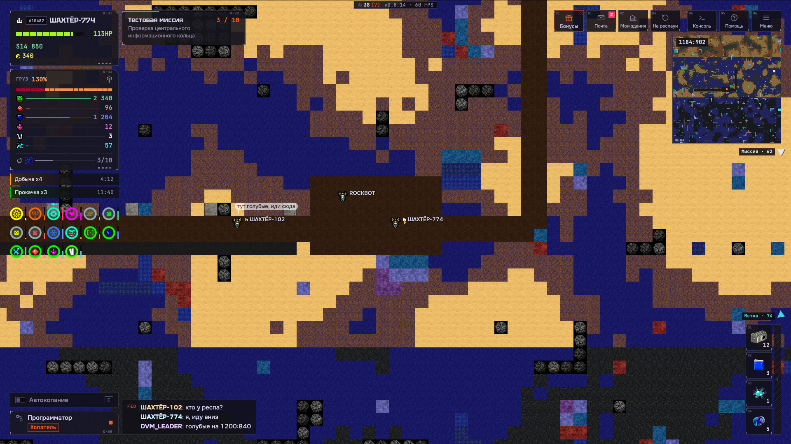

Project KernБренд-книга · ред. 02
Лист 01 / 10核
Project KernБренд-книга · ред. 02
Лист 01 / 10核
K·00 Образ
Под землёй
тоже есть
политика.
Project Kern — песочница про шахту, где всё решают люди и код. Кланы делят недра, игроки программируют роботов, а под каждым метром породы идёт своя война.
Идея
Что такое KernKern — «ядро». Внизу лежит то, за что воюют: ресурсы, территория, глубина. Наверху — люди, которые договариваются, предают и строят кланы. Между ними — роботы, которыми управляет код игрока.
Программатор — главное отличие игры. Робот делает ровно то, что ты написал: клетка за клеткой.
Общество решает больше, чем кирка. Союзы, заместители, казна, объявления, заявки.
Шахта — это территория. Её захватывают, держат и теряют. Тихих мест под землёй нет.
Мотив
Приборная панель подземного бюро: шкала глубины, пласты, номера, риски, засечки, индексы. Много мелких деталей, но каждая выровнена по сетке — порядок поверх хаоса породы и людей.
Образ игрока
Оператор и политик. Пишет программы для робота, торгуется с соседями, ведёт клан в драку за глубину. Его робот — инструмент, его код — почерк, его клан — сила.
Знак 核
核 (hé) — «ядро», то же значение, что у слова Kern. Второй знак марки и печать на каждом окне: строгая геометрия, один иероглиф, много воздуха вокруг.
Знак
Символ, словесный знак, печать- Символ — шестигранник с ядром, прежний знак игры в новом коде: внешняя грань — линия 3, внутренняя — волосяная, засечки у вершин, ядро-ромб — сигнал.
- Словесный знак — «Project Kern» гарнитурой Tektur, обычным регистром. Заглавными не набирается.
- Печать 核 — в квадрате с волосяной рамкой цвета сигнала. Стоит перед заголовком каждого окна.
- Охранное поле — половина ромба-ядра со всех сторон. Минимальный размер символа — 24 px.
- Нельзя: вращать, обводить, добавлять тени и градиенты, менять цвет ядра на любой кроме сигнала.
Слоган
Основной и короткиеПод землёй тоже есть политика.Основной
Твой код. Твой клан. Твоя шахта.Про механики
Копают все. Побеждает клан.Про войны
Основной слоган выбран; два других — запасные для баннеров. Подзаголовок «Экспедиция в недра планеты» в игре остаётся: он объясняет жанр, слоган задаёт характер — с иронией, про людей, а не про породу.
Палитра
Базальт, лаванда, сигналПропорция
Сигнал — один на экран по смыслу: основное действие, выбранное, активное. Цвет несут данные (кристаллы, деньги, здоровье) — интерфейс вокруг них остаётся монохромным. Прозрачность собирается из тех же каналов палитры: rgb(var(--rgb-well) / .45).
Шрифты
Три гарнитуры · SIL OFLOFL · вариативный
OFL · 100–900
OFL · 100–800
PingFang / Noto Sans SC
Шкала, px
Все три гарнитуры распространяются под SIL Open Font License: свободно для коммерческой игры и встраивания в клиент. Коробка строки у всех приведена к 1,2 em, чтобы раскладка не зависела от гарнитуры.
Микрографика
Набор деталейДекор собирается только из знаков, которые не нужно переводить: цифры, символы, 核. Слова в декоре запрещены — они ломают перевод и раскладку. Всё статично: ни одна деталь не мерцает и не движется.
Иконки
Линия 1,5 · прямые концыОдна толщина линии, прямые концы и углы, без заливок. Иконка рисуется в квадрате 24 и читается в 16.
Интерфейс
Принципы
Так
- Панель — базальт, волосяная рамка, засечки, срезанный правый верхний угол.
- Числа — моноширинным, столбцом.
- Один сигнал на смысл: основное действие оранжевое, остальное — линия.
- HUD сквозит над миром, окна плотные.
- Пустое штрихуется, заполненное делится рисками.
Не так
- Скругления, мягкие тени, размытие.
- Слова в декоре и технические термины в тексте игрока.
- Анимация ради анимации.
- Второй акцентный цвет для кнопок.
- Заглавные в длинных подписях — только в микрометках.
Голос
Как говорит играКоротко и сухо, как запись в журнале смены, — и с иронией, когда речь о людях. На «ты» в рекламе и соцсетях, нейтрально в интерфейсе. Без техники: игрок не знает и не должен знать, что такое протокол или шейдер.
Соцсети
Шаблоны · PNG в social/Шаблоны — social.html?f=…, экспорт в PNG — tools/export-social.sh. Текст шаблонов правится в одном месте, размеры фиксированы под площадку.